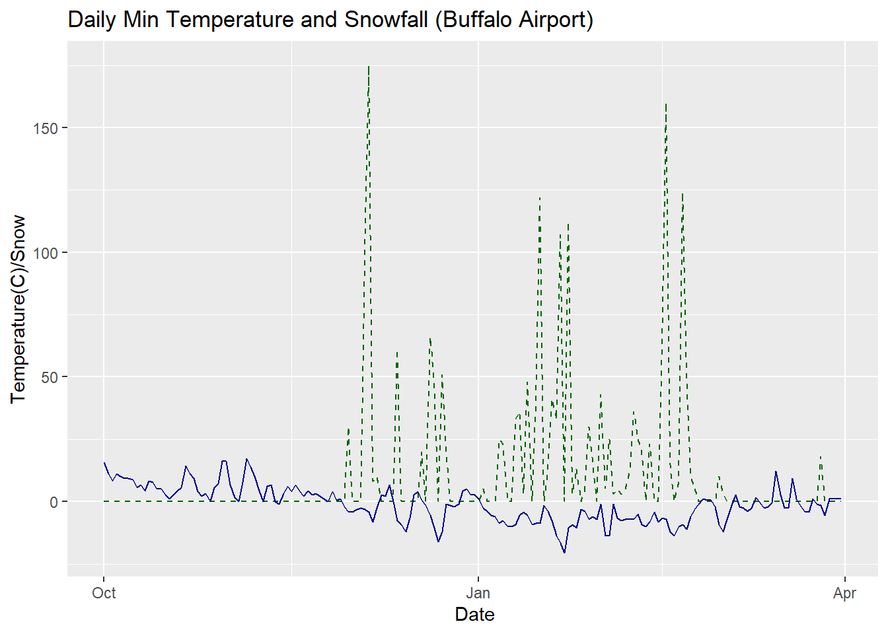
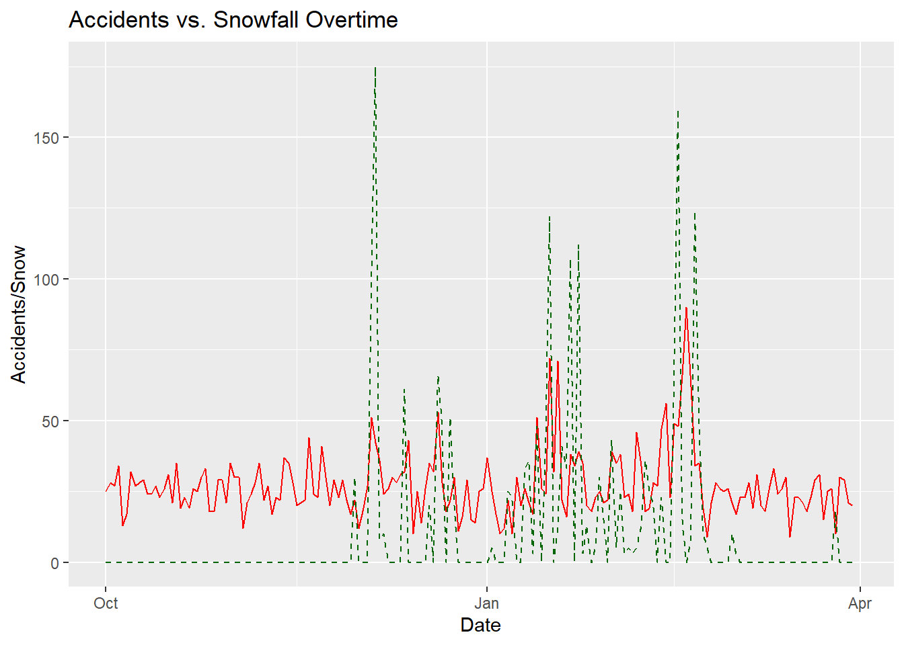
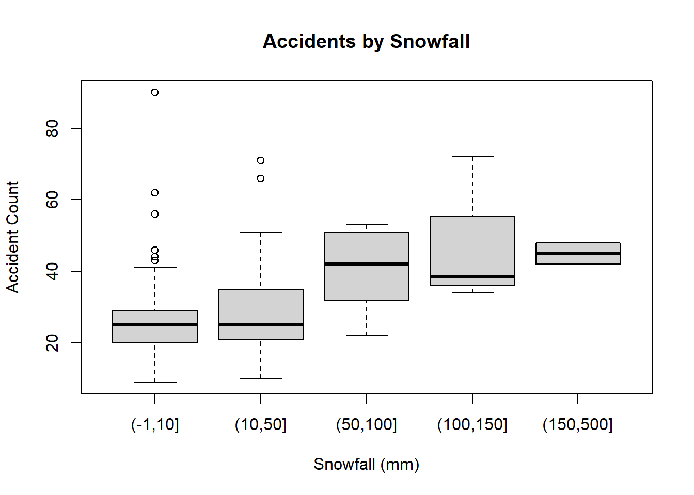

library(httr)
library(jsonlite)
library(dplyr)
library(tidyr)
library(lubridate)
library(ggplot2)
library(knitr)
# ==== USER SETTINGS ====
cdo_token <- "fiIVgrYYVdiXYBLIairHbbComGlDHqrM"
lat <- 42.8864
lon <- -78.8784
start_date <- "2024-10-01"
end_date <- "2025-03-31"
# ==== API CALL ====
data_url <- "https://www.ncei.noaa.gov/cdo-web/api/v2/data"
params <- list(
datasetid = "GHCND",
stationid = "GHCND:USW00014733", # Buffalo Airport
startdate = start_date,
enddate = end_date,
datatypeid = "TMIN,PRCP,SNOW",
units = "metric",
limit = 1000
)cs09: Weather Impacts on Buffalo Traffic
Using Open Data APIs
Data Sources
Two complementary datasets:
- Weather Data – NOAA’s Climate Data Online (CDO) API Provides daily temperature, rainfall, and snowfall from local weather stations.
- Traffic Incident Data – City of Buffalo’s Open Data Portal Contains daily reports of 911 and 311 calls, including traffic incidents.
Retrieve the Data
Data was retrieved using httr:httr, content:httr, and jsonlite:endJSON
Write the API Call Using httr
#Had to use add_headers inside of the GET call to apply my access token
#Had to use as = "text" to convert data to a format endJSON could read
response <- GET(data_url, query = params, add_headers(Token = cdo_token)) %>%
content(as = "text")
noaa <- fromJSON(response)
#Pulling the proper data from the json text
noaa <- noaa$results
#Converted date column using as_date
noaa <- noaa %>%
mutate(date = as_date(noaa$date))
#Used pivot_wider to give the variables their own columns
noaa_table <- noaa %>%
pivot_wider(names_from = datatype, values_from = value)
#Used group_by to sort the data by date, and then summarize(across(everything())) to fill in missing data for each date in the each row
noaa_table <- noaa_table %>%
mutate(attributes = NULL) %>%
group_by(date) %>%
summarise(across(everything(), na.omit))
#Used !duplicate to take out duplicated rows in my noaa_table data (only keeping one row for each date)
noaa_table <- noaa_table[!duplicated(noaa_table), ]
#Used kable to see some of the data
kable(noaa_table[1:10, ], format = "pipe")| date | station | PRCP | SNOW | TMIN |
|---|---|---|---|---|
| 2024-10-01 | GHCND:USW00014733 | 0.3 | 0 | 15.6 |
| 2024-10-02 | GHCND:USW00014733 | 2.3 | 0 | 11.1 |
| 2024-10-03 | GHCND:USW00014733 | 0.0 | 0 | 8.3 |
| 2024-10-04 | GHCND:USW00014733 | 1.8 | 0 | 11.1 |
| 2024-10-05 | GHCND:USW00014733 | 0.0 | 0 | 10.0 |
| 2024-10-06 | GHCND:USW00014733 | 0.0 | 0 | 9.4 |
| 2024-10-07 | GHCND:USW00014733 | 0.0 | 0 | 9.4 |
| 2024-10-08 | GHCND:USW00014733 | 2.3 | 0 | 8.9 |
| 2024-10-09 | GHCND:USW00014733 | 0.8 | 0 | 5.6 |
| 2024-10-10 | GHCND:USW00014733 | 0.0 | 0 | 6.7 |
#Plotted temperature and snowfall over time
ggplot(data = noaa_table) + geom_line(aes(x = date, y = SNOW), color = "darkgreen", linetype = "dashed") + geom_line(aes(x = date, y = TMIN), color = "darkblue") + labs(title = "Daily Min Temperature and Snowfall (Buffalo Airport)", x = " Date", y = "Temperature(C)/Snow")
# ==== API CALL ====
#Set parameters for traffic data; Had to set limit to download all of the availale data
socrata_url <- "https://data.buffalony.gov/resource/6at3-hpb5.json"
soc_params <- list(
"$limit" = 5000,
"$where" =
"report_date >= '2024-10-01' AND
report_date <= '2025-03-31'"
)
#Same GET call as for weather data, minus the access token
traffic_res <- GET(socrata_url, query = soc_params) %>%
content(as = "text")
traffic <- fromJSON(traffic_res)
#Converted JSON output to tibble
traffic <- as_tibble(traffic)
#Used kable to see some of the data in a table
kable(traffic[1:10, ], format = "pipe")Warning in `[<-.data.frame`(`*tmp*`, , j, value = structure(list(type =
structure(c("Point", : provided 2 variables to replace 1 variables| zip_code | complaintid | location | latitude | longitude | council_district | council_district_2011 | police_district | neighborhood | census_tract | census_block_group | census_block | city | state | census_block_group_2010 | census_block_2010 | census_tract_2010 | report_date | accident_type | address | tractce20 | geoid20_tract | geoid20_blockgroup | geoid20_block |
|---|---|---|---|---|---|---|---|---|---|---|---|---|---|---|---|---|---|---|---|---|---|---|---|
| 14203 | 20694398 | Point | 42.890013484177025 | -78.86917487575623 | ELLICOTT | ELLICOTT | District B | Central | 165 | 2 | 2001 | Buffalo | NY | 1 | 1002 | 165 | 2024-10-01T08:22:18.000 | ACCIDENT PROPERTY DAMAGE ONLY | GENESEE ST @ OAK ST | 016500 | 36029016500 | 360290165002 | 360290165002001 |
| 14202 | 20694612 | Point | 42.885090485405044 | -78.87691937369647 | FILLMORE | ELLICOTT | District B | Central | 165 | 1 | 1016 | Buffalo | NY | 1 | 1057 | 165 | 2024-10-01T10:21:27.000 | ACCIDENT/INJURY | FRANKLIN ST @ NIAGARA ST | 016500 | 36029016500 | 360290165001 | 360290165001016 |
| 14220 | 20694717 | Point | 42.84553935987686 | -78.81298374787794 | SOUTH | SOUTH | District A | South Park | 8 | 3 | 3010 | Buffalo | NY | 3 | 3010 | 8 | 2024-10-01T11:01:06.000 | ACCIDENT/INJURY | 301 CHOATE AV | 000800 | 36029000800 | 360290008003 | 360290008003010 |
| 14203 | 20694776 | Point | 42.89508048331273 | -78.87021437501001 | ELLICOTT | ELLICOTT | District B | Fruit Belt | 25.02 | 1 | 1011 | Buffalo | NY | 1 | 1011 | 25.02 | 2024-10-01T11:28:46.000 | ACCIDENT PROPERTY DAMAGE ONLY | WASHINGTON ST @ GOODELL ST | 002502 | 36029002502 | 360290025021 | 360290025021011 |
| 14203 | 20694779 | Point | 42.89508048331273 | -78.87021437501001 | ELLICOTT | ELLICOTT | District B | Fruit Belt | 25.02 | 1 | 1011 | Buffalo | NY | 1 | 1011 | 25.02 | 2024-10-01T11:29:43.000 | ACCIDENT PROPERTY DAMAGE ONLY | WASHINGTON ST @ GOODELL ST | 002502 | 36029002502 | 360290025021 | 360290025021011 |
| 14206 | 20694812 | Point | 42.87476748394057 | -78.80193589839676 | LOVEJOY | LOVEJOY | District A | Kaisertown | 167 | 1 | 1005 | Buffalo | NY | 1 | 1000 | 167 | 2024-10-01T11:42:44.000 | ACCIDENT/INJURY | S OGDEN ST @ GRISWOLD ST | 016700 | 36029016700 | 360290167001 | 360290167001005 |
| 14215 | 20694908 | Point | 42.951213470723715 | -78.8135953884213 | UNIVERSITY | UNIVERSITY | District E | University Heights | 9805 | 1 | 1000 | Buffalo | NY | 1 | 1004 | 46.02 | 2024-10-01T12:41:56.000 | ACCIDENT/INJURY | 3495 BAILEY AV | 980500 | 36029980500 | 360299805001 | 360299805001000 |
| UNKNOWN | 20694914 | Point | 42.957648469786946 | -78.81850938632795 | UNKNOWN | UNIVERSITY | UNKNOWN | UNKNOWN | UNKNOWN | UNKNOWN | UNKNOWN | Buffalo | NY | UNKNOWN | 3000 | 46.01 | 2024-10-01T12:44:23.000 | ACCIDENT PROPERTY DAMAGE ONLY | MAIN ST @ KENMORE AV | UNKNOWN | UNKNOWN | UNKNOWN | UNKNOWN |
| 14210 | 20694915 | Point | 42.8556244877426 | -78.81004489738085 | SOUTH | SOUTH | District A | Seneca-Cazenovia | 10 | 4 | 4005 | Buffalo | NY | 4 | 4005 | 10 | 2024-10-01T12:44:26.000 | ACCIDENT/INJURY | SENECA ST @ WEYAND ST | 001000 | 36029001000 | 360290010004 | 360290010004005 |
| 14210 | 20695108 | Point | 42.86602848753444 | -78.84764238457039 | LOVEJOY | FILLMORE | District A | First Ward | 5 | 1 | 1003 | Buffalo | NY | 1 | 1027 | 5 | 2024-10-01T14:26:49.000 | ACCIDENT/INJURY | S PARK AV @ SMITH ST | 000500 | 36029000500 | 360290005001 | 360290005001003 |
#Converted to date column, grouped by date, and used n() from dplyr to count the complaintids on each date and show that value in the complaintid column
traffic <- traffic %>%
mutate(date = as_date(report_date)) %>%
group_by(date) %>%
summarise(complaintid = n())
#Graphed daily trends
ggplot(traffic) + geom_line(aes(x = date, y = complaintid)) + labs(title = "Daily Traffic Accidents in Buffalo", x = "Date", y = "Count")Merge Weather and Traffic Data
#Combined weather and traffic data
weather_traffic <- noaa_table %>% left_join(traffic)
#Used replace_na() to make all NA values = 0; Used wday to create a weekday column
weather_traffic <- weather_traffic %>%
replace_na(list(x = 0)) %>%
mutate(date = as_date(date)) %>%
mutate(weekday = wday(date, label = TRUE))
#Created this vector to divide the data by snowfall
custom_breaks <- c(-1, 10, 50, 100, 150, 500)
#Used cut and my vector to create a column grouping snow into bins to be used in the boxplots later
weather_traffic <- weather_traffic %>%
mutate(snow_cut = cut(SNOW, breaks = custom_breaks))
ggplot(weather_traffic) + geom_line(aes(x = date, y = complaintid), color = "red") + geom_line(aes(x = date, y = SNOW), color = "darkgreen", linetype = "dashed") + labs(title = "Accidents vs. Snowfall Overtime", x = "Date", y = "Accidents/Snow")
Visual Exploration - Accidents vs. Weather
#Accidents by day of the week boxplot
weekday_box <- boxplot(complaintid~weekday, data = weather_traffic, xlab = "Day of Week", ylab = "Accident Count", main = "Accidents by Day of the Week")#Accidents by snowfall amount boxplot
snow_box <- boxplot(complaintid~snow_cut, data = weather_traffic, xlab = "Snowfall (mm)", ylab = "Accident Count", main = "Accidents by Snowfall")
#Linear graph of Accidents vs. Snowfall
ggplot(data = weather_traffic, aes(x = SNOW, y = complaintid)) + geom_point(aes(color = weekday)) + geom_smooth(method = "lm") + labs(title = "Accidents vs. Snowfall", x = "Snow (mm)", y = "Accident Count", color = "Day of the Week")`geom_smooth()` using formula = 'y ~ x'Warning: Removed 1 row containing non-finite outside the scale range
(`stat_smooth()`).Warning: Removed 1 row containing missing values or values outside the scale range
(`geom_point()`).
#Linear graph of Accidents vs. Rainfall
weather_traffic <- weather_traffic %>%
mutate(log_precip = log1p(PRCP))
ggplot(data = weather_traffic, aes(x = PRCP, y = complaintid)) + geom_point(aes(color = weekday)) + geom_smooth(method = "lm") + labs(title = "Accidents vs. Rainfall", x = "Rain (mm)", y = "Accident Count")`geom_smooth()` using formula = 'y ~ x'Warning: Removed 1 row containing non-finite outside the scale range
(`stat_smooth()`).Warning: Removed 1 row containing missing values or values outside the scale range
(`geom_point()`).Fit a Linear Model
#Regression model (complaintid relationship to snow and precip) showing expected increases in prcp and snow with increased accidents
lm_model <- lm(complaintid ~ SNOW + PRCP, data = weather_traffic)
tidy_model <- broom::tidy(lm_model)
kable(tidy_model, format = "pipe")| term | estimate | std.error | statistic | p.value |
|---|---|---|---|---|
| (Intercept) | 24.9409808 | 0.9379852 | 26.589951 | 0.0000000 |
| SNOW | 0.1377837 | 0.0304749 | 4.521214 | 0.0000112 |
| PRCP | 0.4533198 | 0.2419325 | 1.873745 | 0.0626045 |